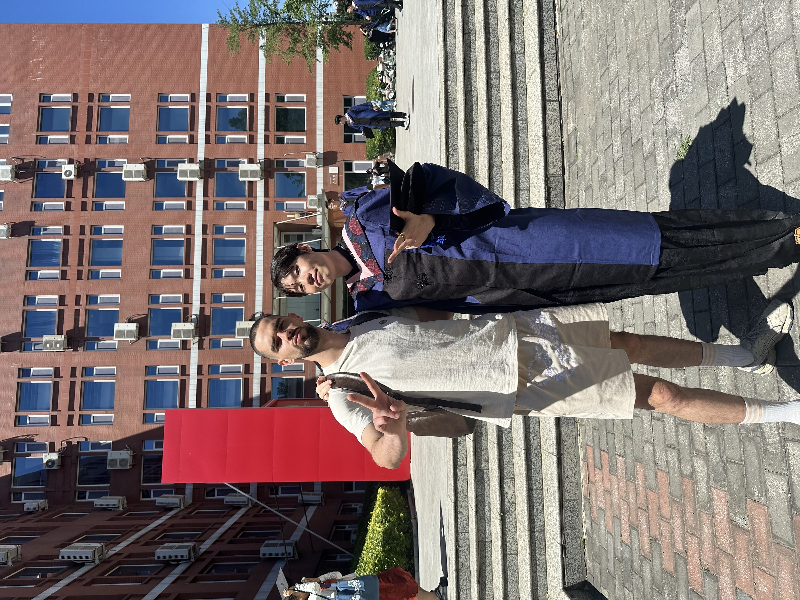
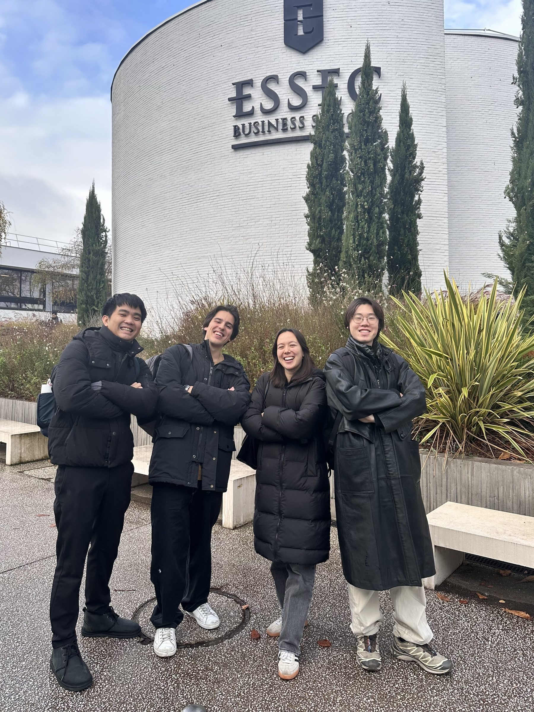
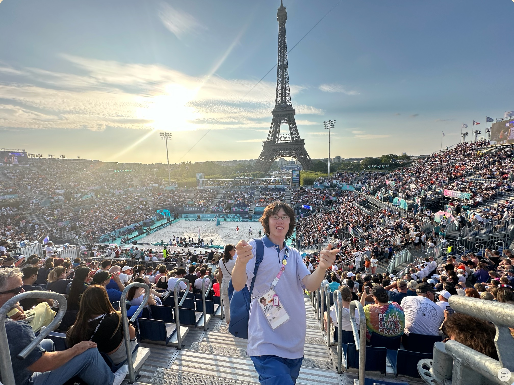

2019—2026：
从 BISU，走向世界。
七年时间，一半在北京，一半被一场交换悄悄改写。如果你也在这两座城市上过课，我们大概见过。
七年，三段
本科 · 北京第二外国语学院经济学院
作为天津考生考入二外，兜兜转转回到了出生地北京。经济学学士，也是"最惨的一届"——全程见证新冠疫情，依托学校资源在 2022 年北京冬奥会期间服务首都奥运赛事。从对"经济"这个词还很模糊的大一新生，到开始能用框架去理解世界运转方式的大四学生，这是把兴趣一点点收敛成方向的四年。
硕士 · 北京第二外国语学院经济学院
考研两财一贸未果后，继续留在二外经济学院攻读硕士，2026 年毕业，论文研究人工智能对全球价值链网络的影响。研究生阶段的课堂之外，更多时间花在真实世界的项目里——创业、实习、出海，课堂里学到的框架开始被一次次拿到现场去验证。

交换 · 法国 ESSEC 高商（Grande École Exchange）
依托学校资源和强烈的意愿，先入选巴黎奥运会实习生，随后留在法国高商交换一个学期，把生活半径从北京搬到了巴黎近郊。课程表只排周二到周四，于是每一次交换都变成了一次四天小长假；也正是这段时间，结识了二外 99 级法语系的校友——这段经历后来被我写成了一篇更长的游学记录。

课堂之外：一个学期，半个欧洲
交换学期的课程节奏，意外给了我大量"小长假"。于是从意大利西西里（拜访了北京二外的老同学，一度有种走进《教父》场景的恍惚感）出发，陆续去了罗马、佛罗伦萨；在法国本地，沿蔚蓝海岸走过尼斯、戛纳、摩纳哥、安提布与芒通；也去了诺曼底，和比利时的根特、布鲁塞尔、布鲁日做了一次独自旅行。
瑞士那段是靠朋友接待的——在瑞吉山徒步、吃了一顿地道的 Fondue；德国柏林则是用脚走出来的，一天三万步；英国从曼彻斯特的 Swing Dance 开始，到伦敦、再到爱丁堡；圣诞节是在丹麦朋友家里过的，大概是我过得最纯粹的一次圣诞。

我带走了什么
北京给了我框架和方法；巴黎给了我一种"把日程表排得松一点，世界会主动涌进来"的生活方式。两种节奏叠在一起，大概就是我现在处理工作和生活的方式——认真规划，也留出余地去抵达意料之外的地方。